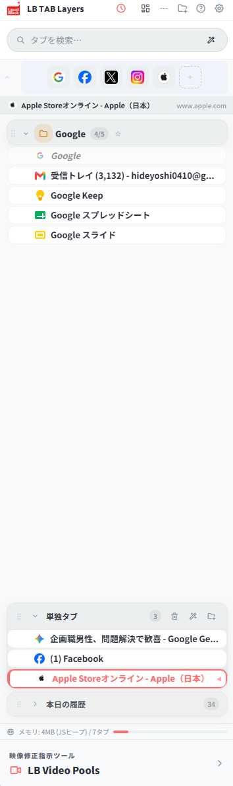
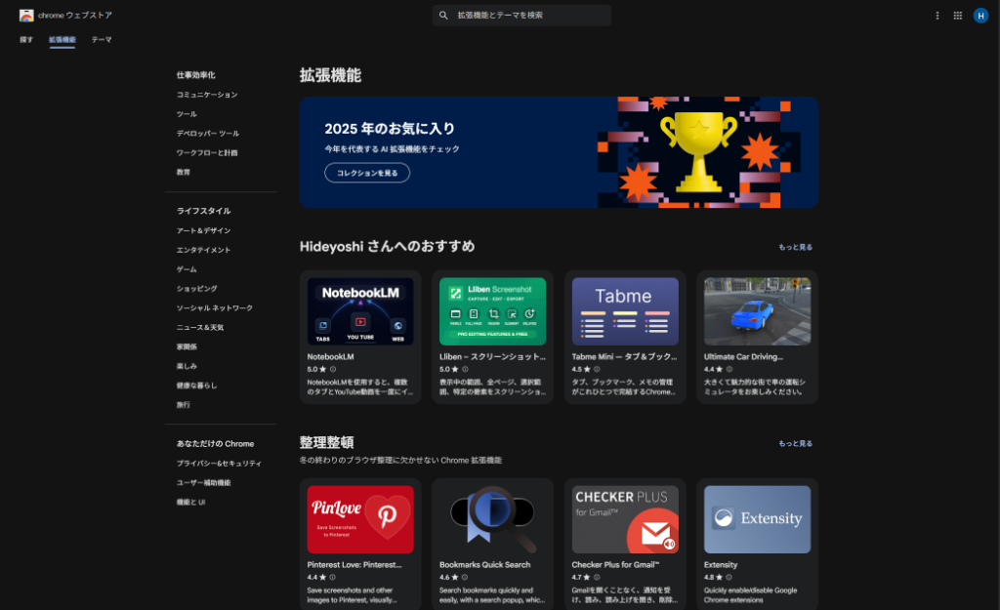
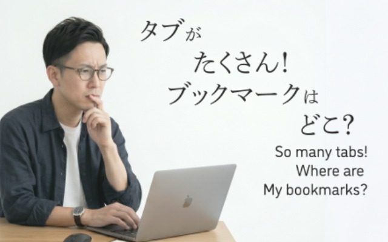

ブックマークに自動保存される
レイヤー型タブ管理。
再起動しても、クラッシュしても、
データはそこにあります。
40テーマ · ブックマーク同期 · 日本語 / English · Chrome 対応（Edge 準備中）

「拡張機能（アドオン）」について詳しくない方でもご安心ください。スマホにアプリを入れるのと同じくらい簡単です。
難しいインストール作業やパソコンの再起動は不要。「Chrome に追加」ボタンを押すだけで、数秒であなたのブラウザに組み込まれます。
導入すると、ブラウザの横にスリムな専用操作画面（サイドパネル）が出現。ネットサーフィンや仕事を邪魔することなく、常にタブ管理をサポートします。
Chrome ウェブストアというGoogle公式のストアから配信されているため、セキュリティ的にも安心・安全。いつでもボタン一つで簡単に削除・無効化できます。

「閉じたら戻れない」から
閉じられない。
PCが重くなる一方。
毎日タブの海を探す。
5分、10分、毎日失われる。
PCが重くて再起動 → 全タブ消失
→ 30分かけて復元。
LB TAB Layers は、この悪循環を断ち切ります。
タブは Chrome ブックマークとして保存。
だから何があっても消えません。
ブックマークだから消えない
ブックマークだから消えない
ブックマークだから消えない
独自ストレージに保存 →
ツール削除で全データ消失
Chrome ブックマークに保存 →
何があっても残る
プロジェクト・案件・用途ごとに
グループ化。
ワンクリックで一括復元。
「めーる」→ Gmail。
「ついったー」→ X。
90語以上の日本語辞書内蔵。
Gmail・Slack・Teams の未読を
グループフォルダに
赤いバッジで表示。
Chrome 内蔵 AI / Gemini / OpenAI / Claude で意味的な検索。
よく使うサイトを常駐。ワンクリックで即アクセス。
大画面で全グループを一覧管理。
ドラッグ&ドロップで整理。
グループ内のタブを
まとめて閉じる。
メモリを一気に解放。
選択したタブを
ワンクリックで
グループにまとめる。
同じURLのタブを自動検出。
ワンクリックでクリーンアップ。
集中モードで
不要なタブをブロック。
ポモドーロタイマー内蔵。
ミニマルからダークまで。暗くても明るくても美しい。
+ 他 32 テーマ
主要タブ管理ツールとの違いを一目で。
| 機能 | LB TAB Layers | OneTab | Workona | Session Buddy | Toby | Chrome 標準 |
|---|---|---|---|---|---|---|
| ブックマーク永続保存 | ✓ 唯一 | ✗ | ✗ | ✗ | ✗ | ✗ |
| サイドパネル表示 | ✓ | ✗ | ✗ | ✗ | ✗ | ✓ |
| グループ管理 | ✓ | ✗ | ✓ | △ | ✓ | ✓ |
| サブグループ（ネスト） | ✓ | ✗ | ✗ | ✗ | ✗ | ✗ |
| テーマカスタマイズ | 40種 | ✗ | 1種 | ✗ | 1種 | ✗ |
| オーバーレイモード | ✓ 唯一 | ✗ | ✗ | ✗ | ✗ | ✗ |
| タブ一括消去 | ✓ | ✓ | ✗ | ✗ | ✗ | ✗ |
| タブ一括グループ化 | ✓ | ✗ | ✓ | ✗ | ✗ | ✗ |
| ファジー検索（日本語） | ✓ | ✗ | ✓ | ✓ | ✓ | ✗ |
| 通知バッジ | ✓ | ✗ | ✗ | ✗ | ✗ | ✗ |
| ドラッグ & ドロップ | ✓ | ✗ | ✓ | ✗ | ✓ | ✓ |
| 価格 | 無料 PRO |
無料 | $7-8/月 | 無料 | 有料化 | 無料 |
タブ・グループの保存先は、
あなたのChromeブックマークだけ。
当社サーバーには保存しません。
プライバシーポリシー →
ライセンス検証のみ匿名IDを使用。個人情報の収集なし。
クレジットカード情報は Stripe が処理。当社サーバーを経由しません。
最新アップデートで搭載された新機能・UX改善。
各セクションに見出しラベルを追加。また、グループの操作ボタンを整理し、主要操作以外を「⋯」に隠すことで操作迷子を防ぎます。
グループの開閉動作を完全に滑らかに。タブリストがヘッダーの裏に美しく滑り込むレイヤーアニメーションを実現。
ブックマークに重要度とタグを付与。終わったプロジェクトをスマートにアーカイブでき、見た目を常にスッキリ保てます。
40種の選べるテーマに加え、重複タブ掃除・フォーカスタイマー・自動サスペンドなど充実の機能を完備。
タブはChromeブックマークとして残るので、
拡張を削除してもリンクは失われません。
再インストール時にグループとタブが復元されます。
※ テーマ・色・タグ等の設定は
ローカル保存のため削除時にリセットされます。
いいえ、買い切りです。
今なら期間限定セールで $4.99（通常 $9.99）。
一度のお支払いで永久にご利用いただけます。
Google Chrome 114 以降、および Microsoft Edge で動作します（Windows / Mac / Linux / ChromeOS）。
タブ・グループのデータは
ローカルブラウザ内に保存されます。
ライセンス検証のための匿名IDのほか、
アイコン表示や検索補助で
一部外部サービスと通信します。
詳しくはプライバシーポリシーへ →
